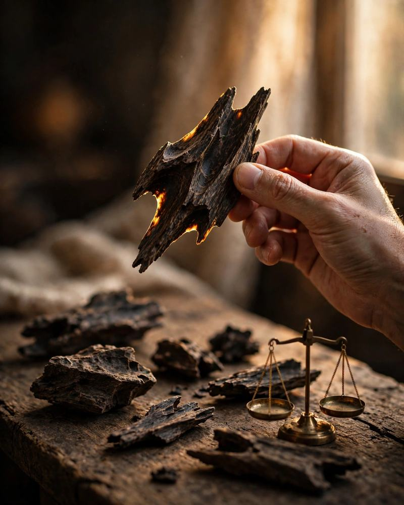

天然沉香本身是木材加树脂，正常佩戴没有已知的健康风险。假沉香的问题，在泡油用的油、注胶用的胶、染色用的染料、调香用的香精。这些添加物里，有些含刺激性化学成分。
所以问题不该问假沉香有没有害，而该问：这件东西里加了什么？加了什么，只有检测才知道。
香精：气味刺鼻、单一齁甜，长期闻可能刺激呼吸道。胶水：注胶料加热后可能释放刺激性气味。
染色剂：劣质染料可能掉色沾皮肤。压缩料用的黏合剂：成分不明，加热后同样有风险。闻着刺鼻、摸着掉色的，先停用。
皮肤发红发痒；闻久了头晕、喉咙不舒服；手串掉色沾手；燃烧时烟大刺鼻。出现任何一种，先停用。
停用不是确诊，只是先把风险降下来。接下来送检确认成分，有身体不舒服就去看医生，别自己硬扛。
佩戴是皮肤接触，风险相对低；燃烧是吸入，风险更高。来路不明的线香、香粉别点，尤其别在密闭房间长时间点。
点香讲究通风：开窗、时间别太长，人别一直待在烟里。这是所有线香的通用原则，不只针对假货。
别恐慌：没有证据表明戴过假沉香就会生病。大多数添加物的风险是刺激性的，不是中毒性的。
正确做法是停用、观察身体反应、有不舒服就医、把东西送检确认成分。健康问题问医生，别问卖香的。